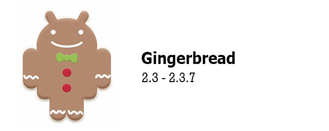

Android 2.0 Eclair
El siguiente postre de Android vería la luz el 26 de octubre de 2009, poco más de un mes después de donut. Llegaban las rutas a Google Maps y el soporte multicuenta y para sincronización con cuentas de terceros, como por ejemplo con Facebook.
La interfaz se volvía a refinar y se soportaban todavía más tamaños de pantalla y resoluciones. Llegaban los Live Wallpapers y se mejoraba la cámara con el soporte para flash, zoom digital y escenas. La gran mayoría de aplicaciones incluídas recibían su dosis de mejoras, como el navegador web, Google Maps, el Calendario o el teclado virtual, que incluía un diccionario y ya sugería nombres de contactos.
Android Eclair recibió dos actualizaciones posteriores. La versión 2.0.1 llegaba el 4 de diciembre de 2009 corrigiendo unos pocos errores y la versión 2.1 el 12 de enero de 2010, con otra tanda de mejoras y revisión de la API. Ya por aquel entonces los fabricantes estaban demasiado entusiasmados en añadir su capa de personalización y así nacía el programa Nexus: Android tal y como Google lo había concebido, materializado por primera vez en el Nexus One.
Android 2.2 Froyo
En mayo de 2010 pasábamos del ecclair al yogur helado con la llegada de Froyo. Dos de sus cambios más importantes son el soporte para comandos de voz y la creación de puntos de acceso Wi-Fi. Aquí tienes al tatarabuelo de Google Assistant, pues era ya posible buscar, obtener direcciones, escribir notas, programar alarmas y más acciones solo con tu voz.
Froyo recibió un impulso importante en velocidad y rendimiento. El navegador web mejoraba con la integración del motor V8 de Javascript de Chrome, el soporte para la subida de archivos y el soporte para GIF animados. Sí, GIF animados. Se incluía también el soporte para Adobe Flash.
Llegaban entonces las notificaciones push con el servicio Android Cloud to Device Messaging (C2DM) y se permitía por primera vez mover aplicaciones a la tarjeta SD, un clásico que nos ha traído tantas penas como alegrías, pues nunca ha funcionado excesivamente bien.
Froyo se actualizaba en tres ocasiones con las versiones 2.2.1 y 2.2.2, separadas solo 4 días entre sí y la versión 2.2.3, en noviembre de 2011. Se trataban principalmente de correcciones de errores y parches de seguridad.
Android 2.3 Gingerbread

El hombre de jengibre llegaba el 6 de diciembre de 2010 acompañado del nuevo Nexus S, esta vez creado por Samsung. El sistema estaba ya empezando a madurar así que las novedades eran más de mejorar esto y aquello. Introducía, eso sí, la API para juegos, el soporte para NFC y la tradición de los huevos de pascua.

Con Ginberbread, la interfaz volvía a recibir pequeños ajustes, adoptando varios iconos acentos de color en verde androide. Estaba ya preparado para pantallas con resoluciones WXGA y superiores, así que había que asegurarse que se vería bonito en grande.
Se introducía la posbilidad de seleccionar un fragmento de texto antes de copiarlo al portapepeles (antes solo se podía copiar el texto entero) y el teclado virtual volvía a mejorarse. Nótese que estamos hablando de Android stock: la capa de varios fabricantes ya incluía la selección de texto desde antes.
En esta versión se añadieron los "easter egg" o "huevos de pascua". Siendo el primero un cuadro zombi que se mostraba como una imagen tras aporrear la versión de Android en las opciones.